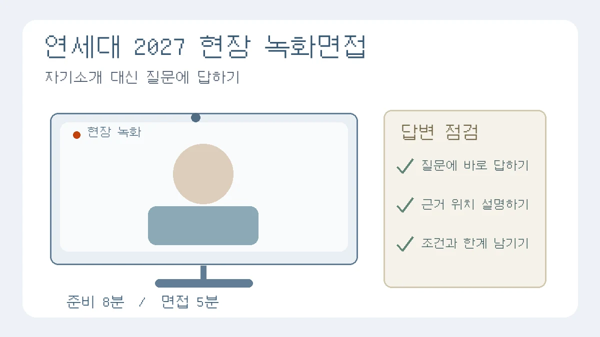

연세대 2027 활동우수형 녹화면접, 자기소개부터 시작해도 될까요?
연세대 서울캠퍼스 2027 활동우수형 의예과 외 현장 녹화면접의 개인정보·무관한 자기소개 규정을 확인합니다. 8분 준비·5분 답변 수정 연습과 입실·퇴실 확인 절차를 안내합니다.

대상은 2027학년도 연세대학교 서울캠퍼스 수시 학생부종합전형[활동우수형]의 의예과 외 모집단위 지원자입니다. 2027학년도는 2026년 입시 시즌의 전형을 뜻합니다. 오늘 새 제도가 발표됐다는 기사가 아닙니다. 2026년 9월 1일 게시된 면접 안내와 현재 모집요강 메뉴에 연결된 PDF를 다시 확인해, 녹화 답변에 자기소개·지원동기를 붙여도 되는지 살펴봤습니다.[1][2][5]
“안녕하세요, 저는 ○○고에서 환경 동아리를 이끈 ○○○입니다.” 평소 발표에서는 자연스러워 보이는 인사도 면접에서는 해당 대학의 유의사항부터 확인해야 합니다. 이번 연세대 안내에는 개인정보 언급과 주어진 답변과 무관한 자기소개·지원동기에 관한 서로 다른 규정이 있습니다. 영상이 매끄러운지보다 먼저, 첫 문장이 문제의 요구에 답하는지 점검하세요.
무엇이 공개돼 있나: 현장 녹화는 집에서 찍어 제출하는 영상이 아닙니다
모집요강 23쪽과 63쪽은 활동우수형 의예과 외 모집단위에서 지원자가 면접 당일 현장에서 녹화한 영상을 복수의 평가위원이 평가한다고 안내합니다. 제시문을 바탕으로 논리적 사고력과 의사소통 능력을 평가하며, 답변 준비는 8분, 면접은 5분입니다.[2] 미리 집에서 영상을 완성해 보내는 전형으로 오해하지 마세요.
같은 활동우수형이어도 의예과는 별도의 대면 면접이며, 9월 1일 공지에도 의과대학 사전 안내 첨부가 따로 있습니다.[1][2] 이 글의 녹화 연습을 의예과의 전체 준비 방법으로 사용해서는 안 됩니다. 다른 대학의 영상면접이나 연세대 미래캠퍼스에도 아래 규칙을 그대로 일반화하지 않습니다.
첫 문장 점검: 개인정보와 무관한 자기소개를 구분해서 읽으세요
모집요강 64쪽은 면접에서 지원자 성명·수험번호·학교명 등 개인정보와 부모·친인척의 실명을 포함한 사회적·경제적 지위를 암시하는 내용을 언급하면 불합격 처리한다고 안내합니다. 이어 주어진 문제에 대한 답변만 해야 하며, 답변과 무관한 자기소개·지원동기 등을 언급하면 불합격 처리할 수 있음이라고 적고 있습니다.[2] 두 규정의 문구를 구분해 읽어야 합니다. 모든 말실수가 같은 결과를 낳는다는 임의의 감점 공식을 만들지는 않습니다.
따라서 녹화 답변을 학생부 활동 자랑이나 대학에 대한 의지 표명으로 시작하는 연습은 이 안내에 맞지 않을 수 있습니다. “이 대학에 꼭 오고 싶습니다”를 매 답변에 붙이거나, 설득력을 높이려 학교·가족 배경을 덧붙이는 방식 대신 질문이 요구한 비교·판단·적용부터 말해 보세요. 이는 위 유의사항을 연습에 적용한 편집팀의 제안이며, 대학의 모범답안이나 별도 평가 기준은 아닙니다.
적용 범위: 학생부종합이라는 이름만 보고 서류 확인 면접으로 준비하지 마세요
- 학년도·학년: 2027학년도 입학 지원자 대상입니다. 통상적인 진급에서는 2026년 고3에 해당하지만, 졸업생 등은 자신의 실제 지원 학년도를 기준으로 읽으세요. 2028학년도 전형명이나 개편 설명을 현재 규칙으로 가져오지 않습니다.
- 대학·전형·모집단위: 연세대학교 서울캠퍼스 학생부종합전형[활동우수형], 의예과 외 모집단위의 현장 녹화 면접입니다. 모집요강은 1단계 서류평가와 2단계의 제시문 기반 면접을 구분합니다.[2]
- 준비 자료: 63쪽은 2015 개정 교육과정에 바탕을 둔 출제와 수리·통계자료 또는 과학 관련 제시문의 포함 가능성을 안내합니다.[2] 관심 전공의 시사 용어나 활동 대본만 외우는 것으로 제시문 읽기 연습을 대신하지 마세요.
여기서 탐구보고서는 자신의 자료 해석 습관을 복기하는 데 쓸 수 있습니다. 학생부에 적힌 활동을 영상에 반드시 넣으라는 뜻이나 개인 보고서 파일을 추가 제출하라는 뜻은 아닙니다. 이미 끝난 활동을 새로 꾸미거나 세특을 면접용 대사로 바꾸는 작업도 필요하지 않습니다.
교육용 가상 사례: 잘 준비한 자기소개를 덜어내고 질문에 답하기
다음은 편집팀이 만든 교육용 가상 자료와 답변 수정 연습입니다. 연세대의 기출·예상문항·공식 해설을 옮기거나 변형한 것이 아니며 실제 학생의 연구·면접 결과도 아닙니다.
가상 자료와 요구
자료 A는 학교 공간의 좌석을 이용 편의 중심으로 배치하자고 제안하고, 자료 B는 조용한 이용과 공동 토론의 시간대를 나누자고 제안한다고 가정합니다. 질문은 “두 제안의 기준을 비교하고, 함께 적용할 때 확인할 조건 하나를 설명하세요”입니다. 실제 학교 조사나 효과 측정 자료는 주어지지 않았습니다.
수정 전
안녕하세요. 저는 ○○고의 ○○○입니다. 동아리 회장을 하며 협업을 배웠고, 연세대에서 더 성장하고 싶습니다. 두 자료는 모두 좋은 학교를 만들자는 뜻이므로 그대로 실시하면 집중력이 높아집니다.
이 답변은 개인정보와 무관한 자기소개를 앞에 두고, 정작 비교 기준은 생략했습니다. 좌석 배치와 시간 운영을 같은 제안처럼 묶었으며, 측정하지 않은 집중력 향상도 단정했습니다. 목소리나 표정을 고치기 전에 답변의 일을 다시 나눕니다.
수정 후
A는 좌석을 어떻게 배치할지에, B는 서로 다른 이용 목적을 시간으로 어떻게 나눌지에 초점을 둡니다. 공간 배치와 운영 시간이라는 기준이 다르므로 두 제안이 반드시 대립한다고 볼 수는 없습니다. 함께 적용하려면 조용한 이용 시간에도 필요한 좌석에 접근할 수 있는지 확인하겠습니다. 다만 실제 이용 기록이나 학습 결과가 없으므로 집중력 향상까지 확인됐다고 말할 수는 없습니다.
수정 후에는 이름·학교·지원 의지를 덜어내고 비교 → 함께 적용할 조건 → 판단의 한계를 남겼습니다. 이 문장을 외우라는 뜻은 아닙니다. 다른 요구가 주어지면 답변 구조도 달라져야 합니다. 연습 영상에서 문제의 요구와 관계없는 문장에 표시하고, 그 자리를 빠뜨린 근거로 바꾸는 방법을 익히세요.
8분 준비·5분 녹화 연습: 끝난 뒤에 빠진 요구를 확인합니다
아래 순서와 시간 배분은 편집팀의 연습 제안입니다. 공식 안내의 준비 8분·면접 5분을 연습 조건으로 삼되, 실제 메모·필기도구·화면 조작·진행 절차는 수험생 안내를 따르세요.[2] 재녹화가 허용된다고 가정하거나 장비 사용법을 임의로 정하지 않습니다.
- 준비 첫 2분: 질문의 요구를 짧게 나눕니다. ‘비교’와 ‘조건 제시’가 함께 있다면 둘 다 답해야 한다는 표시를 남깁니다.
- 다음 4분: 각 요구에 쓸 근거 위치를 찾고, 자료에 있는 사실과 본인의 해석을 나눕니다. 완성 문장을 전부 쓰기보다 핵심어를 연결합니다.
- 마지막 2분: 답변의 첫 문장과 빠진 요구를 확인합니다. 자기소개·지원동기가 끼어들었는지, 자료에 없는 결과를 단정했는지도 봅니다.
- 녹화 연습 5분: 제한시간을 두고 한 번 이어 말해 봅니다. 연습 상대가 중간에 빠진 조건을 알려주는 방식만으로 끝내지 마세요. 5분을 반드시 군더더기로 채우라는 뜻은 아닙니다.
재생할 때는 외모나 억양을 채점하는 대신 세 가지를 적습니다. ‘어느 요구를 답하지 않았나’, ‘어느 근거를 말하지 않고 결론만 냈나’, ‘자료 밖의 주장을 어디에 덧붙였나’입니다. 고칠 항목 하나를 선택하고 다시 연습하세요. 이 자가점검으로 대학의 점수를 추정하거나 합격을 보장할 수는 없습니다. 연습 영상은 공개 업로드할 필요가 없고, 개인정보가 남았다면 공유 범위와 보관을 신중하게 정하세요.
일정은 다른 칸에: 입실 마감은 녹화 시작 시각이 아닙니다
모집요강상 활동우수형 1단계 합격자 발표일은 2026년 11월 16일(월)입니다. 인문·통합 면접은 11월 21일(토), 자연 면접은 11월 22일(일)로 안내돼 있습니다.[2] 이 글은 아직 발표되지 않은 개인별 면접 대상 여부나 장소를 대신 확인해 주는 자료가 아닙니다.
9월 1일 공지의 일정 첨부는 모집단위별 오전·오후를 나누고 오전 입실 마감 08:30, 오후 입실 마감 12:30을 제시합니다. 예를 들어 활동우수형 문과대학·사회과학대학은 11월 21일 오전, 경영학과는 같은 날 오후에 배치돼 있습니다. 오전은 13:00 일괄퇴실, 오후는 개별퇴실로 안내합니다.[3] 이 시간을 자기 녹화 시작 시각이나 실제 답변 시간으로 옮겨 적지 마세요. 오전 응시 후 바로 나올 수 있다고 가정해 다른 약속을 잡지 않는 것도 중요합니다.
- 지금: 원서 접수 내역의 전형명·모집단위를 일정 첨부의 정확한 행과 대조합니다. 다른 학과의 오전·오후를 가져오지 않습니다.
- 11월 16일 발표 때: 합격 여부와 면접시험 장소·수험생 유의사항을 입학처에서 직접 확인합니다. 공지는 장소와 유의사항을 1단계 합격자 발표일에 안내한다고 명시합니다.[1]
- 응시 전: 수험표·인정 신분증·입실 완료 시각과 변경 공지를 다시 확인합니다. 모집요강에는 모바일 주민등록증·모바일 운전면허증 불인정, 교복 착용 금지가 적혀 있습니다.[2] 종이 신분증의 세부 인정 조건도 모집요강과 나중의 안내에서 직접 확인하세요.
불확실성과 다음 확인 시점
10월 22일 수시 공지 목록과 모집요강 메뉴를 확인했고, 위 일정 공지와 연결 PDF를 읽었습니다.[4][5] 모집요강은 지원 인원 상황에 따라 일정·장소가 변경될 수 있다고 안내합니다.[2] 따라서 다음 핵심 확인 시점은 11월 16일 1단계 발표이며, 그 전에도 입학처 수정 공지가 나오면 대조해야 합니다. ‘현재 읽을 수 있는 안내’와 ‘최종 개인별 응시 안내’를 같은 것으로 취급하지 마세요.
실제 문항 수, 자료 내용, 특정 활동의 출제 여부와 평가 결과는 여기서 예측하지 않습니다. 모집요강의 불합격 관련 규정을 축소해서도 안 되지만, 근거 없는 면접관 심리나 모든 대학 공통 감점 규칙을 덧붙여 불안을 키울 필요도 없습니다. 이번 연습의 목표는 첫 문장부터 질문에 답하고, 근거가 없는 결론을 덜어내는 것입니다.
관련 기존 가이드
- 꼬리질문 점검 가이드 — 녹화 뒤 개념·근거·한계 중 설명이 비는 부분을 찾는 데 활용하세요. 이 전형에서 대면 꼬리질문이 동일하게 진행된다는 뜻은 아닙니다.
- 면접 준비용 활동 복기 가이드 — 이미 했던 탐구의 자료 선택과 본인 역할을 돌아볼 때 읽으세요. 제시문 대신 활동 소개를 하라는 안내는 아닙니다.
- 탐구보고서 대표 작성 가이드 — 질문·자료·결론의 연결부터 정리할 때 활용하세요.
공식 출처와 확인 범위
확인일은 2026년 10월 22일입니다. 모집요강은 현재 메뉴 연결본의 인쇄 쪽수 13·23·63·64쪽을 중심으로 대조했으며, 파일명의 숫자를 수정 공지일로 추정하지 않았습니다. 면접 일정 첨부의 원문 표·영상·문항·사진은 재게시하지 않았습니다. 가상 자료와 수정 예시, 연습 배분은 편집팀이 독립적으로 만든 교육용 제안입니다. 사용자 제공 AI 참고자료는 주제 탐색의 보조일 뿐 공식 근거로 인용하지 않았습니다.
- [1] 연세대 2027 수시 면접 일정 공지 — 2026-09-01
- [2] 연세대 서울캠퍼스 2027 수시 모집요강 — 현재 모집요강 메뉴 연결 PDF
- [3] 연세대 2027 수시 면접 일정 및 시간 안내 — 9월 1일 공지 첨부
- [4] 연세대 서울캠퍼스 수시 공지 목록 — 2026-10-22 확인
- [5] 연세대 서울캠퍼스 수시 모집요강 메뉴 — 2026-10-22 연결본 확인
이 칼럼은 운영자의 관점과 일반 교육 정보를 담고 있으며 특정 대학 합격이나 평가 결과를 보장하지 않습니다.
함께 볼 글
학생부 기반 대입 면접 꼬리질문 점검표: 주장·근거·한계 연결하기NEW
보고서의 핵심 주장에 조건과 반대 질문을 붙여, 근거를 찾을 수 있는 답변과 아직 확인하지 못한 답변을 구분합니다.
고3 대입 면접 준비: 탐구보고서를 활동 근거 카드로 정리하는 법NEW
새 활동을 늘리기 전에 기존 보고서의 질문·방법·판단·한계를 복원하고, 지원 전형에 맞는 설명 자료로 정리하는 방법입니다.
탐구보고서 처음 쓰는 법: 질문·자료·분석·결론을 연결하는 실전 예시NEW
가상 공지 네 개를 비교하며 관찰과 해석, 결론의 한계를 구분하고 보고서 한 편으로 묶습니다.